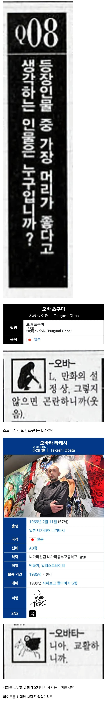

데스노트 원작자가 생각하는 머리가 가장 좋은 캐릭터
댓글
라이토는 초반에 도발이 넘어가 이상 뭐 평이 박할수밖에 없지
라이토가 제일 똑똑했으면 애초에 잡을수가 없는 싸움이잖아
어떤 개붕이가 작가는 라이토가 제일 지능 높다고 말했다던데 오피셜은 차갑네
라이토: 데스노트 가지고도 (심지어 맹목적 추종자인 여친도 데스노트+눈소유) 겨우 l이랑 비빔.
데스노트 같은 희대의 사기템 들고 지 신놀이하다가 몰려진거라 고평가해주기 힘들지
사신이라는 변수를 몰라서 L이 진거지
사신을 인지한 시점에서 니아 선에서 컷임 라이토는
라이토가 멍청한게 L의 도발에 넘어가 전세계라는 선상에서
일본이라는 나라의 어느 지역이라는 것까지 용의자의 위치를 대폭 축소시켜버렸으니
이것만으로도 엄청난 디메리트라 이후 전개때 머리를 아무리 잘 썻어도 묻히는 감이 있음
완전범죄의 첫단추부터 심각하게 잘못뀀
그나저나 나는 머리좋은 인물로 미소라 나오미가 나올줄 알았는데 의외네 나오미가 진짜 머리가 좋은데
이름을 들키면 죽는다는 룰을 생각할 수 있게 된 시점부터 이름은 그 누구에게도 알려주지 않았어야함..
일본으로 용의자 축소됐을때 그냥 공책사용을 1년정도 멈춰버렸으면 시간은 라이토 편 아니였을까?
그냥 평소대로 활동하기만 해도 찾기 어려웠음. 왜냐하면 관동 지역으로 축소했다고 해도 관동 지역이 워낙 넓어서 여전히 씨름장에서 바늘 찾기였음.
그런데 이때 L과 일본 경찰이 "키라의 활동 시간대를 보면 키라는 학생이다"라고 추려내자 라이토는 아빠를 통해 정보 입수해서 활동 시간대를 바꿔서, L이 "수사 방향 잡자마자 이러네. 아, 키라는 관동 지역 경찰 관계자의 가족이면서 학생이구나~" 하고 추려냄. 라이토가 L과 일본 경찰 사이를 이간질하려고 일부러 벌인 짓이긴 했는데(일본 경찰은 L이 정보를 누출시켰을 거라 의심하고 뒷조사를 시작했음. 라이토는 뒷조사 정보로 L의 신상을 알아내랴고 함.), 이런 짓 안 했으면 L이 라이토 발견하기까지 시간이 오래 걸렸을 거임.
류크는 누구의 편도 아니였기 때문에 너가 말한대로 하면 류크가 라이토 이름 지 데스 노트에 쓰면서
노잼이라고 죽였을 수도 있음ㅋㅋㅋ
그 뒤에 자기가 경찰쪽에 있단걸 알려서 경찰쪽에서도 L을 파헤치게 할거다 생각하는게 좀 멍청해보임.. 걍 자기한테만 리스크 덩어리일거같은데.. 결국 끝까지 L 이름도 사신 통하지 않으면 아예 실마리도 없었잖아
미래를 위해서 L은 무조건 죽여서 치워야하니까 경찰이 L을 조사하게 만들고 본인도 그 정보를 얻을 수 있으니까 최단기간에 L을 죽일 수 있는 하이리스크 하이리턴이긴 했음
라이토 지능이 쟤네보다 고평가될 수가 없음. 아무리 생각해도 키라 측이 압도적으로 유리한데, L과 비비고 니아에게 졌으면 씨발 ㅋㅋㅋㅋ
니아가 제반니 복사기 전개 때문에 저평가당하는데, 복사기 전개 없었어도 어쨌든 니아는 실물 데스노트를 확보했기에 키라는 졌음. 데스노트 본체 없이 어쩔 건데. 금고 뚫린 것도 미카미가 열쇠를 아무 데나 놓아서 복제당해 돌파당한 거고.
제반니 복사기는 걍 세레모니 급이지 물증(데스노트) 확보했으니 진 게 맞긴함 ㅋㅋㅋ
사실 승패를 가른 결정적인 라이토의 패착이 미카미의 개뻘짓이었다는게 좀 뭔가뭔가긴 함
그런 미카미를 무한신뢰한 라이토가 잘못한거라고 하면 할말없긴 하다만
마츠다 추측대로 난 니아가 데스노트 사용해서 조종한게 맞는거 같음
원작에서는 10일후에 갑자기 발광사해서 죽어버리고, 애니판에서는 갑자기 급발진하면서 심장에 펜꽂아서 자살해버리니
실물 데스노트를 확보한 라이토의 패배지 뭐...
애초에 미카미는 이전부터 라이토가 지시하지도 않은 걸 자율적으로 판단하여 독자적으로 움직이는 모습을 여러 번 보였음. 미카미의 자율 행동은 라이토의 도움이 되긴 했지만, 키라의 뜻을 독자 해석해서 전달해서 라이토가 당황하는 등 (ex - 방송에서 전과자도 심판 대상이라고 말했는데, 라이토는 '키라는 범죄를 억제하기 위한 존재지 이미 법에 의해 심판이 끝난 죄는 상관하지 않는다. 만약 전과자까지 들쑤시면 한 번 저지른 죄는 용서받을 수 없다는 말이 되어 역효과가 난다.'라고 당황함.) 너무 광신도라 엇나가는 모습도 묘사됐음.
라이토는 미카미가 우수하긴 하니까 넘어갔는데, 계속 시키는 일만 하라고 제대로 고삐를 쥐었어야 했음. 미카미를 너무 믿어서 방치한 게 패인.
히히 범죄자 다 죽여야지 <- 를 머리가 좋다고 말해줄수가 없음 애초에... 좀 그렇잖아
타노스처럼 메시아 콤플렉스있는 캐릭이라 쩔 수 없음
니아는 이미 L이 자기 목숨 받쳐서 알아낸 데스노트의 존재 라는 치트키급 단서를 이미 얻고 시작한 놈이잖아 애초에 데스노트 같은 초자연적 물건의 존재 자체가 제일 큰 변수인데 그거 존재 알고 시작한 것 부터가 걍 주워먹은거지 ㅋㅋㅋ
그것도 있고 우선 니아 부터 자기가 멜로랑 힘 합쳐서 키라 잡은거라고 생각하기 때문에
지능 자체는 니아가 더 앞선다 쳐도 존나 유리한 상황에서 개긴거라 ㅋㅋㅋㅋ
애초에 라이토와 대등한 위치도 아니었음
1부는 초법적인 공권력과 자본 VS 치트키 노트
로 인과율을 밝혀내며 서로를 잡기 위해 팽팽하게 싸워댔다면
2부는 이미 데스노트라는 인과율이 다 밝혀진 이상 니아가 맘만먹으면 그냥 언제든지 물리력을 통해 라이토를 제거해버릴수 있는 상황이었음
본인이 L뛰어넘겠다고 추리싸움으로 놀아준것뿐이지 애초에 라이토는 니아 손바닥 안이었음
생전 L이 가장 의심한 사람이 라이토였던대다가 니아 입장에서는 그냥 급습해서 죽여버려도 아무런 리스크가 없었음
키라라면 개꿀이고 아니어도 라이토가 죽었다고 키라한테 보복받는다거나 그럴 일은 없으니까
냉정하게 보면 라이토가 니아 L 보다 떨어지는 건 맞지만 류크라는 존재 때문에 니아 L 보다 똑똑할 수가 없음
똑똑하면 신세계를 만든다는 중2병 망상질은 안할테지만 만약 했어도
L의 도발에 넘어가지 않고 학생이라는 추리 역이용해서 아무런 변화도 보이지 않았겠지
도발에 걸림-관동에 있다고 추리 될 수 밖에 없음
회의 후 키라 행동 패턴 변경-회의 내용이 유출 됐다고 판단할 수 밖에 없음
레이 펜버 및 FBI 사망-당연히 레이 펜버가 쫓던 인물 중에 키라가 있을거라고 특정 지을 수 밖에 없음
이 인관관계를 생각못하고 박은거잖아
근데 류크는 이런 라이토의 바보 같은 짓을 보고 재밌다고 하는거라
라이토가 더 똑똑했다면 류크에게 재미를 줄 수가 없었음 ㅋㅋㅋ 류크는 관찰자이자 라이토 지능 한계선 같은거임
그리고 라이토야 치트키 같은 물건을 들고 설친거고 미사의 눈,미사의 데스노트,렘 이 3개의 존재 때문에 질 수가 없는 싸움을 했음
기존에 주웠던 데스노트 제외하고 라이토 쪽에 붙는 초자연적인 힘이 3가지인데 ㅋㅋㅋ
걍 경찰들이랑 사기꾼 겉절이들 데리고 다니는 L과는 가진 가치가 매우 컸음
애초에 사람의 이름을 쓰면 죽는 노트 라는 존재를 상상할 수도 없는 노릇이고
L은 순수 지능으로 승부 본 거고 라이토는 지능과 치트키 아이템 + 호감 NPC1 중립 NP1 이렇게 붙은거라
라이토는 TV 도발에 넘어가서 가짜 L 죽인 순간
빡대가리에 신념도 없는 븅신새끼 인증한거라
신세계의 신이 된다 같은 유아적인 생각을 하는 시점에서 사실 똑똑해보이는 느낌은 아니지만...
이거야 만화적으로 단순화한 장치니까 넘어가더라도
전개상 당연히 꼬리가 잡혀야 되겠지만 그렇다해도 라이토가 저지른 실수가 많고 치명적인 것들이라
라이토 고를 리가 없을 듯
신이 된다는 목적이랑 모든 도발에 넘어가는 행동을 보면 아무리 똑똑해도 결국 그 나잇대 어린애라는걸 잘보여줬던거 같음
니아는 거의 대부분 방면에서 L보다 하위호환인 캐릭터인데
라이토 농락시키는 아가리만큼은 L보다 우위긴 한듯
라이토가 아무잣 안했으면 류크가 라이토 진작에 죽였을거야
마츠다 누굴 쏘는거야
아자자잣
바카야로!!!!
라이토가 진짜 똑똑했으면 애초에 잡히질 않겠지
딸딸이만 쳤어도
작가 피셜 딸쳤어도 L은 딸치는 키라 라고 확정 한다고함 그리고 작중 L이 말하는 퍼센트는 의미 없음 이미 확정한 상태인데 증거가 없는거
아니 그냥 전세계에 범죄자들이 넘치는데 일본인만 죽인게 아이러니 하지
그건 아님
라이토는... 공부를 잘해ㅜ
노트만 안 주웠어도 알파메일의 삶을 천수까지 누리면서 행복하게 살았을텐데
나같으면 테러집단이랑 한국한테 독이 되는 전세계 대가리들만 하나씩 참수해 나갈텐데
라이토가 다 이겨 먹으면 스토리 진행이 안 되니 어쩔 수 없지
라이토는 공부잘하는거지 현명하거나 똑똑한건 아닌듯
라이토가 똑똑했으면 애초에 의심 받을 짓을 안하고
숨어서 적당히 킬수올렸겠지
L은 스토리상 억까 당했지